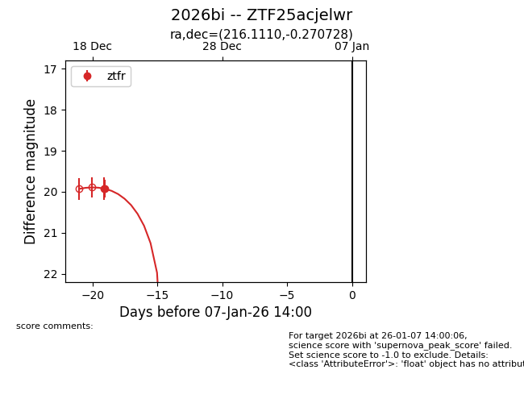
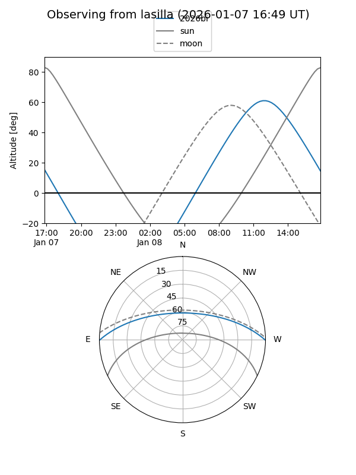
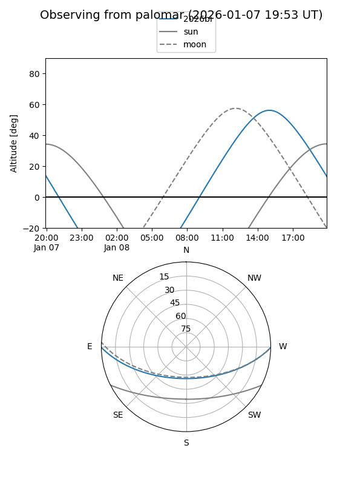
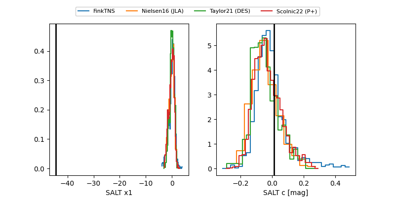

2026bi
Target 2026bi at 2026-01-07 14:00
Aliases and brokers:
FINK:
Lasair:
ALeRCE:
TNS:
YSE:
alt names
ZTF25acjelwr (ztf,fink_ztf)
2026bi (tns,yse)
Coordinates:
equatorial (ra, dec) = 216.1110,-0.27073
equatorial (HMS+DMS) = 14:24:26.65,-00:16:14.62
galactic (l, b) = (345.9443,+54.64078)
Flags:
Photometry:
last ztfr=19.93
1 ztfr detections
Lightcurve

Visibility


Additional plots
